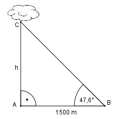

Aufgabe 129 Wie hoch steht eine Wolke, wenn sie senkrecht angestrahlt und aus einer Entfernung von 1500 m mit einem Erhebungswinkel von 47,6° angepeilt wird?

Im Dreieck ABC: h tan 47,6° = ---------- |*1 500 m 1 500 m h = 1 500 m * tan 47,6° = = 1 500 m * 1,0951 = 1 642,7 m